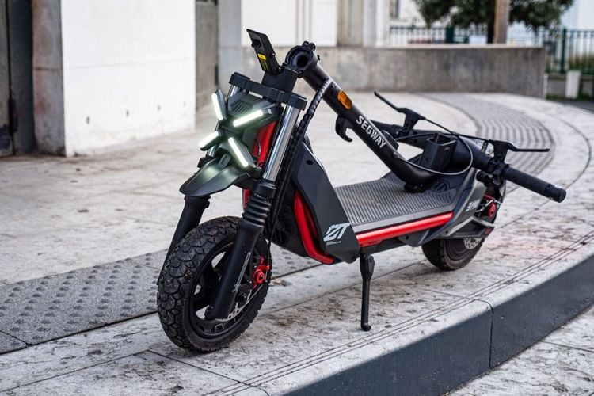

Mon initiation à la trottinette électrique de qualité. Puissance de 650W,
autonomie de 100 km, suspension avant et arrière. Ce modèle m'a appris
ce qu'était un vrai plaisir de rouler urbain. Je l'ai revendu en 2024
après 2 ans d'utilisation intensive, toujours en parfait état de marche.
Le P100S, modèle qui a lancé ma passion
Segway ZT3 Pro — Le sportif
Mon choix pour les trajets rapides et ludiques. Plus léger et agile que le P100S,
le ZT3 Pro offre une accélération franche et une maniabilité exemplaire en ville.
C'est mon compagnon pour les courses express et les déplacements où je veux
arriver rapidement sans me fatiguer.

Le ZT3 Pro, mon choix pour l'agilité urbaine
Segway Max G3 — Le long courrier
Mon investment pour les distances.
Le Max G3 complète parfaitementavec son confort de roulement supérieur et son autonomie généreuse.
Quand jedois parcourir de longues distances ou affronter des routes irrégulières, c'est lui que je choisis.